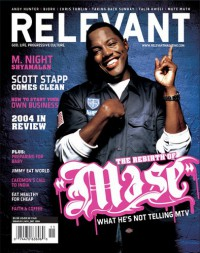

CMnexus
:
Contemporary Christian culture, music, and media.
Magazines
Profiles
Dove Awards
cmnexus.org
CM
nexus
→
Magazine list
→
Relevant
→
Issues
Relevant
, Nov / Dec 2004, #11
< -- Prev
Issue list
Next -- >
Cover

Writers in this Issue
Argyrakis, Andy
Carey, Jesse
Clark, Tyler L.
Foust, Christine
Kim, Won
Marrapodi, Eric
McCracken, Brett
Neiger, Chris
Raspa, Kimi
Shrum, Lycia
Stegenga, Scott
Worthen, Jeff
Mase
Cover Feature:
"Louder Than Words" by Won Kim
Mase
Article:
"Scott Stapp Comes Clean" by Eric Marrapodi
Scott Stapp
"Caedmon's Call Answers The Cry For Justice" by Chris Neiger
Caedmon's Call
Spotlight:
Lovedrug
by Christine Foust
Andy Hunter
by Tyler L. Clark
Rachel Sage
by Jesse Carey
Taking Back Sunday
by Lycia Shrum
Medeski Martin & Wood
by Andy Argyrakis
Album Review:
Jimmy Eat World
-
Futures
by Jesse Carey
Björk
-
Medúlla
by Brett McCracken
Talib Kweli
-
The Beautiful Struggle
by Jesse Carey
Chris Tomlin
-
Arriving
by Chris Neiger
Paul Westerberg
-
Folker
by Jeff Worthen
The Killers
-
Hot Fuss
by Jesse Carey
Marc Broussard
-
Carencro
1000 Generations
-
Prayers
by Jeff Worthen
The Snake the Cross the Crown
-
Mander Salis
by Tyler L. Clark
G. Love
-
The Hustle
by Kimi Raspa
Charlotte Martin
-
On Your Shore
by Jeff Worthen
Rilo Kiley
-
More Adventurous
Mute Math
-
Reset EP
by Scott Stegenga
LL Cool J
-
The DEFinition
by Jesse Carey
Letter Kills
-
The Bridge
by Chris Neiger
Sixpence None the Richer
-
The Best of Sixpence None the Richer
by Kimi Raspa
MeWithoutYou
-
Catch for Us the Foxes
by Jesse Carey
Interpol
-
Antics
by Jeff Worthen
Nicole C. Mullen
-
Everyday People
The Colour
-
The Colour is Out and About
by Tyler L. Clark
Relevant Links
Official web site of Relevant
You may be able to find
Relevant
in a library near you:
check
Worldcat
< -- Prev
Issue list
Next -- >
CMnexus
(noun)
The magazine index
of modern music
and Christianity
© 2011 CMnexus. Last updated April 2021.
Contact:
Rants and other correspondence to:
editor -AT- cmnexus
-DØT- org
About